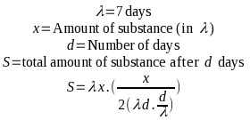

I studied computer science in college. I earned my BS in 2019, and entered the workforce working for a big company on an embedded OS. Quite honestly, while some of the classes that I took provided some useful information and set my mindset in a positive direction at school, there was an awful lot of focus placed on making computing more "mathematical", as I like to think of it. Most of the theory classes were bent on proving the correctness of an algorithm against some set of constraints, and all of them ended up representing the algorithm symbolically, using a derivative of mathematical notation.
On an unrelated note, have you ever opened the "View Source" panel on Google's homepage?
This Connection May Annoy You
Just a quick disclaimer before getting started here, there are a lot of places where my take in this post are going to run counter to certain fields' top priorities. If you need to mathematically prove all of your algorithms for your job, consider first why this requirement is placed upon you before you go challenging it. If your job is implementing cryptography algorithms or anything safety related, please consider the impact of your software, and the impact of getting your code wrong before you read too deeply into what I'm going to say.
However, for the rest of us, let's talk about some stuff that's going to annoy a lot of academics.
Mathematical Notation Sucks
I said it. The notation that we use to denote mathematical equations is horrible, mostly due to the set of symbols that we use to denote it.
Consider the following:
λ
What does this mean? Take your time, answer in your notebook.
Got it?
Wrong. If you answered half-life, you either game too much or you're not in the field of computer science. If you answered a symbol denoting a lambda abstraction, you're on the right track given the computer science stuff I talked about before, but that's not how I intended it here, either.
No, I'm using it as a stand-in for μL, which while obsolete, is a unit of measure once used in science in the late 1800's.
So let's take a look at where we might use this. Let's say you're working for a pharma company, developing an algorithm that calculates the half-life of a substance that's measured in at least one of your source materials in λ, and you want to now use lambda calculus to explain some transform on this quantity. It's a contrived and somewhat extreme example, admittedly, but in this hypothetical you're now bouncing around the use of one Greek letter for three different purposes that all pertain to your work at once, and are forced to either put up with it, and expect that whoever is reading your work will understand it from the context clues, or you're going to have to work very hard to make sure that you very clearly denote some substitutions to prevent collisions. Let's write an equation* using this insane example:

I have to admit, my grasp of this notation is pretty shaky at this point, just from a lack of use. There's a good chance that I got this very wrong, and that's a large part of my critique of the format as a whole. There's an additional risk that I also messed up the premise of the equation as a whole on top of that, so please don't use this in any professional context involving half-life. I haven't used my high school chemistry knowledge in a long time.
However, assuming I didn't screw anything up, you'll notice that λ is overloaded here, and you'll need to use context and intuition to figure out which one is which. However, it gets even worse, since there's a chance I meant something totally different, and the λd portion is actually supposed to be 7d. It's pretty clear here that it's not, but when crossing disciplines even a little, this notation becomes a mess.
Obviously, this is a manufactured example, and most of the time this doesn't wind up being a problem. However, if you've studied enough different branches of science that use math, or even enough disciplines in math, you'll encounter at least one collision. d/dx anyone?
Alternatives?
This isn't an unsolvable problem, however. In fact, we've already got a myriad of solutions that also happen to be the very same format that your compiler will end up reading when all is said and done: programming languages!
This also sidesteps a lot of the problems with mathematical notation, since (for example) introductory programming lessons will teach a programmer to avoid single letter variables, why that's bad, and what to do instead. It doesn't actually teach them how to properly name things, that's an art that we all get wrong no matter how much practice we have, for a variety of reasons given whatever circumstances.
At the beginning of this post, I compared mathematical notation to minified JavaScript. That's not bashing on either mathematical notation or JavaScript, that's just the fact of their designs; both are intended to be read quickly and efficiently by an "expert". It's true that a beginner will have a much easier time reading some equation as a program for a computer than a math equation with domain-specific (usually Greek) letter substitution to describe some constant or transform. In the same way, a person reading a computer program will have to shuffle a lot less in their head if it's not minified, even if that wastes a lot of RAM and CPU cycles to execute in production.
But, in the same way that we don't ask people to un-minify Google's home page scripts, we shouldn't expect that a mathematical formula will make an algorithm any easier to understand for the average person, or any easier to prove, for that matter. If it's an exercise you enjoy, by all means, don't let me stop you. If you need a standard format to prove correctness for some other reason? You could do worse than this. However, the fact that this format is standard is, in my opinion, a holdover from the days when computing professionals weren't taken seriously yet.
Is Your Algorithm the Right Algorithm?
This is much more to the point. You can prove that your algorithm does exactly what it's supposed to do and prove that it handles all cases, but is what it's supposed to do the right thing to do?
I'm going to throw out a made-up statistic here, but I'd say something around 90% or more of the code a person writes in their day-to-day as a software programmer has more to do with error handling, input and output, or changing data formats and adapting data to different standards rather than the provable transforms on that data. Your algorithm could be rock solid, but if you mix up some three-letter-acronym (and remember, all TLAs are overloaded) then you're much more likely to introduce some weird bug nobody can track down. A similar issue occurs if you don't handle your pointers with extreme care. To my knowledge, there's no real agreed upon syntax for memory management in theoretical computer science, yet it's one of the single greatest defect surfaces in any code.
Don't Prove, Instead...
So here are some alternatives. In all cases, you will want to be absolutely sure that you aren't trying to square the circle, pick the alternative that suits your needs, regardless of what I might think.
...Test!
If you can get example data and simulate the environment where your whole codebase lives, this is one of the best options. Not only should you test expected input, but unexpected input. If you can put a system "into production" with a shadow of live data that would be used in real life, this is the best. However, failing that, there are plenty of other options to test code. I'm sure you'll find hundreds of opinions on which version to start with, but just pick one. The more you stress your code, the more you'll be thinking along the lines of how to break it. To be clear, the more you can break it, the better. When you're done, you shouldn't be able to break it anymore, no matter who you put to the task.
...Lint!
Sometimes, a language comes with a linter. One of the best-known examples of this is Pylint, but your language will undoubtedly have something like that which will catch your mistakes in many cases, even if it can't catch them all.
A particular (and unexpected) standout example of this is Android's command line tools. Running gradlew build actually runs a small test suite and produces a report from the built-in linter. Its output is filled with requests to internet resources in JavaScript, though, which I'm very much not a fan of. Nevertheless, it's a good tool and worth using if you're writing an Android app. It caught me on a potential memory leak today, for example.
...Peer Program!
If you have someone you can do this with, sometimes coding with someone looking over your shoulder really is the best thing you can do. Put your heads together, and you'll quickly realize that the mechanical action of inputting code can (and will) push things out of memory occasionally. You'll forget something half-way through a statement at least once in a while, and having someone to back you up and make sure you didn't forget something critical can be the difference between a functional and a correct algorithm.
This is also something that formally proving an algorithm using mathematical notation won't fix. Even if you can prove that your algorithm is "correct", it needs to be correct in implementation or nothing else matters. This is where block comments make sense, as an example.
Bad Habits?
I touched on this briefly, but we don't all use Turing machines. Our computers have memory, and cache, and secondary memory, and weird, buggy CPU instructions. Nothing in theory will prepare you for this. So personally, I believe that trying to prove an algorithm the classic way is a waste of time at best, and a distraction from the part that matters (the implementation) at worst. Draw your own conclusions here, though, maybe it's caught you on something? Personally, I've never had that happen, but I won't rule it out.
So why did I write this article? If you don't accept that I just wanted to rant about Chrome and MathML, then consider this:
I'm still working on the habit changer, and I ran into an issue that I thought was with the algorithm. I started writing out the steps to reproduce it on paper, and running through what was going on with a pen. Every time, however, I got the right results. I showed consistently that for the inputs I was giving my algorithm, the outputs were correct.
That's when I started combing over the implementation and found that I was converting days to milliseconds twice. The problem was my hasty port out of Rust, not the algorithm itself. No formal proof would have caught this, but a quick examination of the path the data took would have.
Read your own code before you turn to rewriting it (again).
If you expected something more profound from the conclusion, maybe approach it from this angle:
Correctness, that is, writing the right thing, should always be on your mind. However, while writing a proof is the way we're all taught to do this, in fact the field of computer science is all about finding edge cases and exploiting them, then proving that our solution is bulletproof, that's not the end of the story. You don't need the mathematical notation to prove something is right, nor do you need to prove anything that way to have a correct algorithm. Furthermore, a correct algorithm will always fall prey to a bad implementation, which is a much larger problem. The two both need to be correct, but they don't have to be separate, and in fact, they shouldn't be.
* I was going to use MathML here, but then I remembered the last time I used it. In high school I used to turn in assignments using it, but then one of my teachers started using Chrome over Firefox and everything broke. So, if you don't like the ugly look of a stretched PNG, blame the Google devs who removed support after Chrome 24, rather than fixing their awful implementation.
Just to poke fun at Chrome users, and because it was honestly easier to get this than the screenshot, here's the MathML version of the insane Lambda equation above:
To my (pleasant) surprise, this worked just fine in GNOME Web, not just Firefox, and it should also work in Safari, though I have no way of testing that. If you see StarMath equations instead (e.g., it's a bunch of text not a properly formatted equation), your browser doesn't support MathML. This is a real shame, because (at least in my copy of Firefox) this appears to render better than LibreOffice's default, with less random collisions and a better overall representation of the structure of the formula.
If you want to make your own math equations for use like this, rendered by the browser, you can either use some JavaScript library to do it, or use LibreOffice Math to export to a MathML file, then paste that into your HTML source. That's what I did, anyhow.